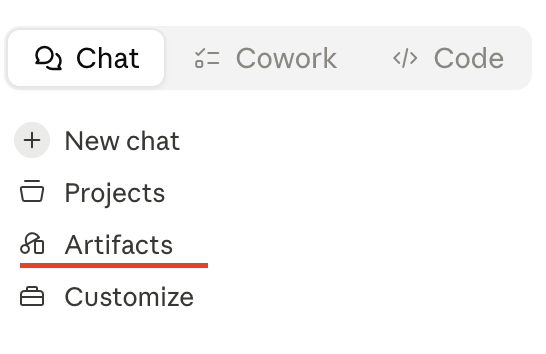
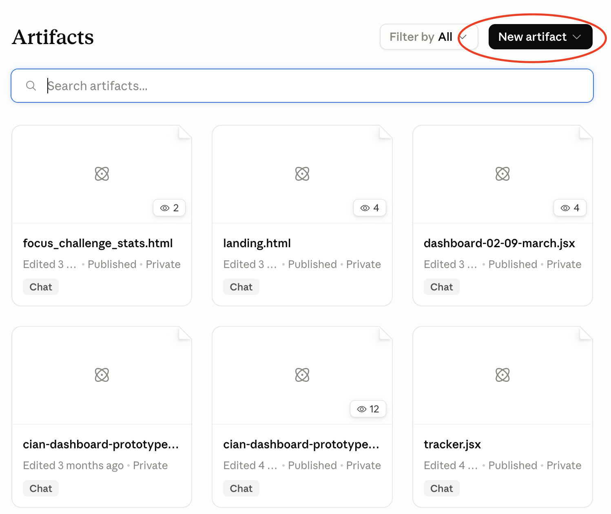
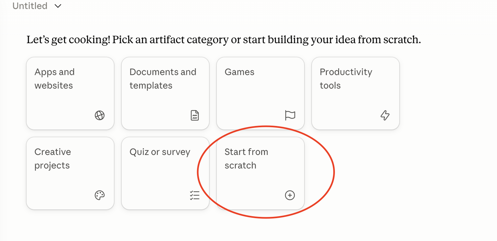
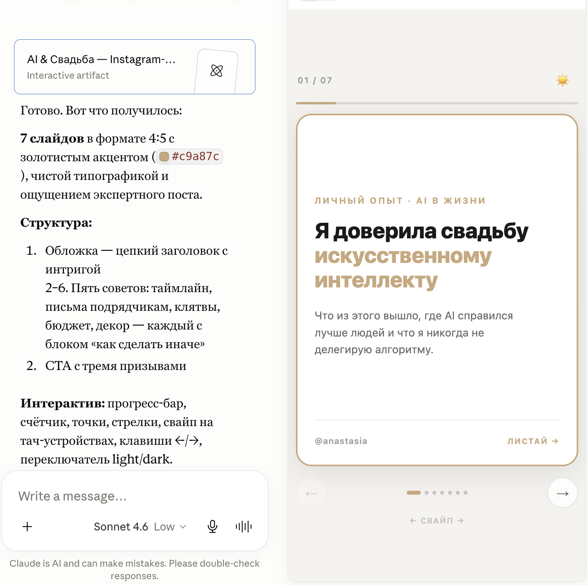
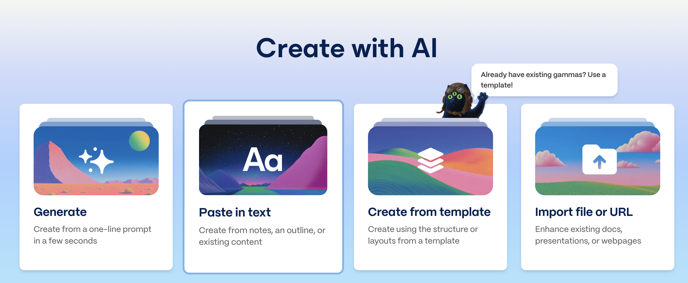
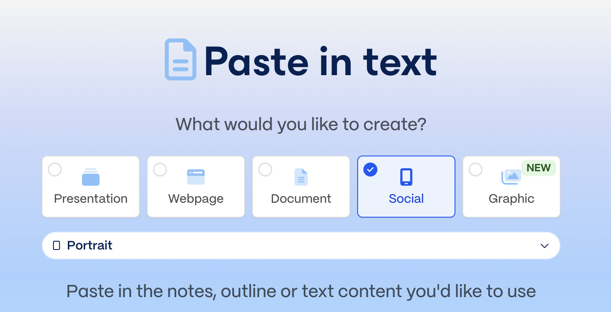

Карусель за 5 минут 📳
Описала тему — получила готовые слайды для Instagram, LinkedIn, ВК. Без дизайнеров, без сторонних приложений, без дополнительных расходов.
Artifact — это «живая» страница в чате с Claude. Ты описываешь, что хочешь, — получаешь готовый интерактивный визуал прямо в окне чата. Можно листать, переключать темы, поправлять на лету.
Pro не обязателен. Artifacts работают на бесплатном тарифе Claude. Если ещё не оплатила — это твой урок без блокеров.
Хочешь подставить свои картинки и серьёзно дотюнить дизайн? Лучше открой Claude в Cowork-режиме (это Claude в десктопном приложении с доступом к твоей папке). Складываешь картинки в папку, говоришь Claude: «возьми из папки фото и подставь в карусель вместо плейсхолдеров» — и он подставит их прямо в HTML. Artifacts в обычном чате так не умеют.
Делаешь карусели регулярно? Один раз сделай дамп профиля: в отдельном чате расскажи Claude о себе, своём блоге, аудитории, стиле и стоп-словах → попроси: «выгрузи всё в файл .md». Сохрани этот файл. Дальше в каждый новый чат с промптом для карусели прикрепляй этот .md — текст будет звучать в твоём ТОВ с первого раза, без правок.
За что я полюбила этот формат
- Контент за минуты, не за дни. Описала структуру и тему → получила готовый визуал. Не нужны дизайнер и даже Canva.
- Один шаблон — бесконечные темы. Тот же промпт под чеклисты, лайфхаки, мифы, ошибки. Сегодня — пост в блог, завтра — лид-магнит.
- Главное — это бесплатно. Раньше: дизайнер на фрилансе 3–5 тысяч ₽ и 1–3 дня. Теперь: 0 ₽ и 5 минут.
Где это пригодится
- Экспертный пост в блог — превратить список «5 ошибок» / «7 лайфхаков» в визуальную карусель
- Учебный материал — структурировать урок или гайд в формате слайдов
- Презентация идеи клиенту — после встречи прислать не саммари в Word, а карусель «вот мои выводы»
- Лид-магнит — «7 шагов до …» в обмен на подписку
- Чек-лист команде — внутренние гайды, регламенты, памятки
Claude Artifacts — главный способ
Это самый универсальный путь: бесплатно, гибко, можно подкрутить под себя. Получается интерактивный прототип, из которого делаются скриншоты для Instagram.
Шаг 1. Найди Artifacts в Claude
Это короткий путь по интерфейсу — 3 микро-скрина. Просто пройди по ним:



Шаг 2. Выбери свою тему
Возьми одну из этих или придумай свою:
Можно придумать свою. Любой список «5–7 пунктов на тему X» отлично ложится в формат карусели. Если сомневаешься в теме — спроси Claude отдельно: «Дай 10 идей карусели под мою нишу: [твоя ниша]».
Шаг 3. Отправь промпт
Тут — два варианта. Выбери свой:
Сценарий А · Claude напишет текст сам. Когда у тебя нет готового поста — Claude сам придумает 7 пунктов под твою тему и оформит их. Замени жёлтую плашку «Тема карусели» на свою.
~ замени жёлтую плашку с темой и отправь Claude в новом чате ~
Сценарий Б · У тебя уже есть готовый пост. Claude НЕ будет переписывать — только разложит твой текст на 5–7 слайдов и оформит. Твой тон и формулировки сохраняются.
~ замени плашку на свой текст и отправь Claude в новом чате ~
Шаг 4. Проверь интерактив
Прокликай карусель сразу, чтобы убедиться:
- Стрелки «Далее / Назад» переключают слайды
- Точки внизу работают — можно прыгнуть на 4-й слайд напрямую
- Переключатель light/dark — обе темы выглядят прилично
- Прогресс-бар сверху показывает «Слайд X / 7»
- Контент внутри рамки 4:5 — не вылезает за края
Что-то не так? Просто напиши Claude в этот же чат: «перегруппируй слайд 3 — слишком много текста» или «сделай тёмную тему контрастнее». Он перерисует artifact на лету.

Шаг 5. Сохрани 7 слайдов
Artifact — это страница в браузере, а не пост. Чтобы выложить в Instagram, нужны скриншоты каждого слайда.
- Mac:
Cmd + Shift + 4→ выдели область внутри рамки - Windows:
Win + Shift + S→ область - Телефон: обычный скриншот + кадрирование по рамке
Получается 7 картинок = карусель готова к публикации.
Gamma — если хочется красиво и сразу
Если артефакты кажутся «техничными» и хочется получить более полированный, дизайнерский визуал без возни со скринами — есть второй путь через Gamma. Это онлайн-сервис, который умеет делать слайды и карусели из текстового описания.

Gamma бесплатна, но с лимитом. На стартовом тарифе 400 кредитов на создание (хватает на 1–2 проекта). Дальше — платно либо ждёшь обновление баланса. Хороший вариант для разового красивого результата.
Как через Gamma
- Сначала собери черновик в ClaudeВ новом чате попроси: «Сделай контент для карусели на 7 слайдов на тему [твоя тема]. Для каждого слайда: заголовок до 8 слов + одна мысль в 1–2 предложения + один совет. Тон тёплый, без воды». Получишь готовую структуру текстом.
- Открой Gamma → New → GenerateНа gamma.app создай аккаунт (бесплатно), нажми New → Generate.
- Выбери форматGamma спросит, что генерировать — выбери Social или Cards для карусели (Presentation тоже подходит, если нужны широкие слайды).

Выбор формата: Social / Cards / Presentation - Вставь черновик от ClaudeGamma попросит описать тему — вставь структуру из Claude и нажми Generate. Через 30 секунд готовая презентация в редакторе.
- Экспорти как картинкиВ меню Share → Export → PNG. Скачиваешь каждый слайд как картинку.
Когда что выбирать.
→ Хочешь интерактив, гибкость, бесплатно — Artifacts.
→ Хочешь сразу полированный визуал, без скринов — Gamma.
→ Попробуй оба и выбери, что тебе ближе. У всех разный вкус.
📬 Что прислать в чат клуба
- 📸 Скрины своей карусели — все 7 слайдов или коллажем
- 🎯 Какую тему взяла — из списка или своя
- 🧠 Как думаешь применить — в блог, для клиента, для команды
⭐ Задание со звёздочкой
Прогони тот же промпт в ChatGPT Canvas и в Gemini. Сравни результат с Claude Artifacts. Чьё лучше зашло — расскажи в чате.
Это база для следующего урока (вайбкодинг) — поймёшь, как разные модели понимают визуальные задачи.
🌊 Серферам на заметку
- Промпт — это бриф дизайнеру. Чем конкретнее ты описала формат (4:5, прогресс-бар, темы, рамка) — тем точнее результат с первого раза. «Сделай красиво» = лотерея.
- Artifact ≠ готовый пост. Это интерактивная страница. Для Instagram нужны скрины. Это 2 минуты.
- Один артефакт — много форматов. Спроси Claude: «адаптируй эту карусель в формат 9:16 для сторис» — получишь второй вариант без переделки.
- Не перегружай слайды. Заголовок до 8 слов, мысль — 1–2 предложения. Не читается с телефона за 3 секунды — сокращай. Или попроси Claude: «дай 3 более лаконичные версии».
- Визуал тоже можно крутить. Скажи: «сделай ещё 3 цветовых концепции этой карусели» — Claude перерисует. Выбери ту, что попадает в твой блог.
🌀 Похожее в других сервисах
- ChatGPT Canvas — аналог Artifacts в ChatGPT. Менее стабильно для сложных HTML, но норм для простых каруселей. Plus $20/мес.
- Canva — статичные шаблоны, проще если нужен «вот сейчас и без итераций». Бесплатно с ограничениями.
- Gamma — ИИ-генерация презентаций. 400 бесплатных кредитов на старте.